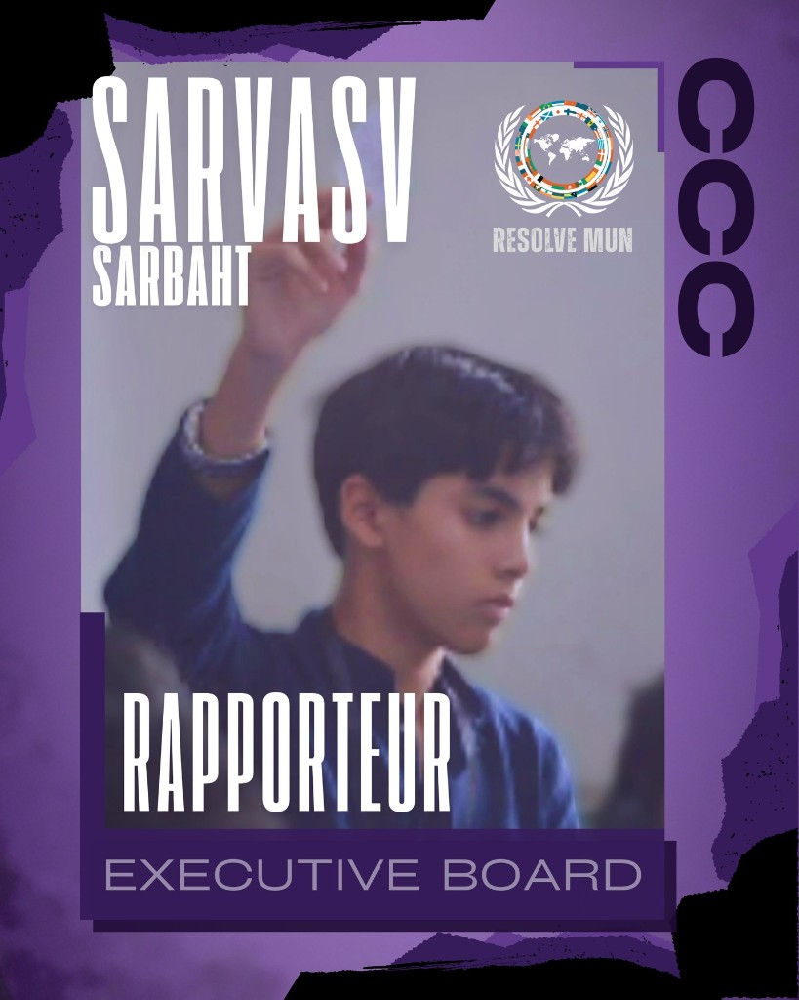

Fourth Estate
International Press
Journalism that shapes the narrative of debate.
Revealing the Mandate
The International Press Corps brief and mandate will be published ahead of the conference.
The Committee
Press delegates report, investigate, and hold councils accountable. Expect fast deadlines and editorial judgment.
Key debate questions
- When does investigative reporting cross into delegate privacy?
- How should press corps verify crisis-room leaks?
- What editorial standards apply during breaking-news cycles?
- Press conferences and breaking-news cycles.
- Investigative pieces on delegate blocs.
Leadership
Executive Board
The dais leading International Press at ONYX MUN 2026.
